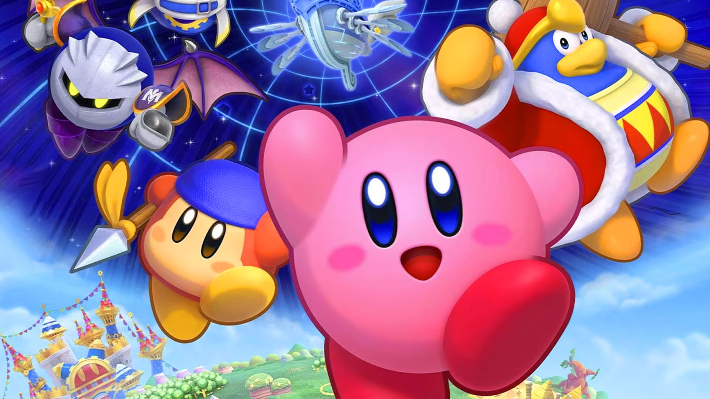
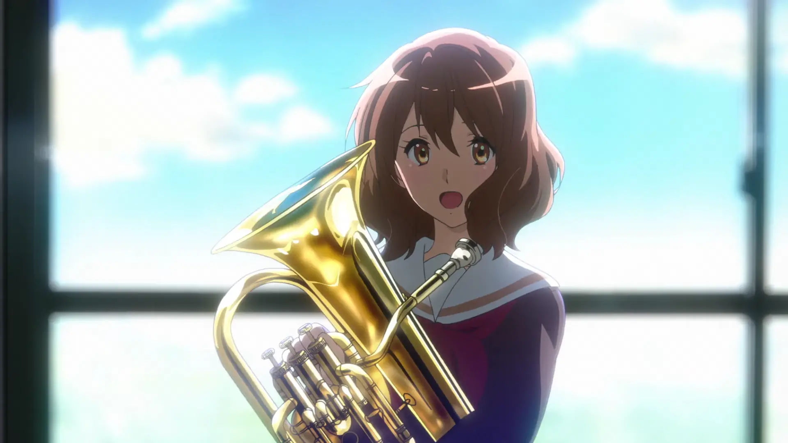
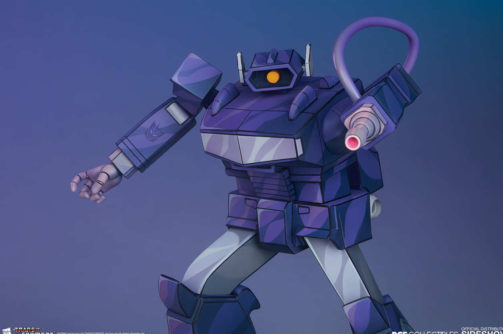

Toríz Flores Jesús
Una breve descripción de mi persona
Mis intereses varían un poco, así que empezaré por lo básico. Mi color favoríto es el verde, verde olivo para ser exactos.
Soy más una persona de gatos que de perros, pero siendo sinceros no considero que unos sean "mejor" o "superior" a los otros,
me gustan todos los animales en general, bueno todos menos los venados, si desaparecen no los llegaré a extrañar,
pero bueno, esa ya es otra historia. No soy una persona de deportes ha decir verdad; Puedo enteder su atractivo pero nunca me llamaron realmente. Lo que realmente me llama la atención es la música, solía tocar la flauta transversal
en la secundaria y actaulmente formo parte de una orquesta tocando el corno francés.
No soy una persona de deportes ha decir verdad; Puedo enteder su atractivo pero nunca me llamaron realmente. Lo que realmente me llama la atención es la música, solía tocar la flauta transversal
en la secundaria y actaulmente formo parte de una orquesta tocando el corno francés.
Me gusta la historia, las matemáticas, las artes, de repente le agarro gusto a otras materias pero esas son las "principales".
De hobbies no tengo mucho que contar. Me gusta leer y mi libro favorito es Demian de Hermann Hesse.
Como era de esperarse me gustan las computadoras y la tecnología en general. Por último me gustaría decir que me gustan los videojuegos, en un principio era un sujeto de Nintento porque era
lo único quue tenía pero conforme pasó el tiempo fuí conociendo nuevas cosas y actaulmente soy más de PC, no juego mucho pero disfruto mucho una noche jugando con amigos en línea.
Mis pelis favoritas:
- Jurassic Park
- Shreck 2
- el castillo vagabundo
- Bastardos sin gloria
Mis comidas favoritas:
- Milanesa de pollo con lechuga y papas
- Hamburguesa
- Lasaña
- Tacos dorados
- Pasta en general
- pizza
Musica que me gusta del momento:
Me gusta tanta musica que no podría elegír solo una, sin enbargo, si tuviera que creo que elegiría estas:
Personajes que me gustan:
| Nombre | Foto | ¿Por qué me gusta? |
|---|---|---|
| kirby |  | Vamos, es Kirby ¿a quién no le va a gustar? ya en serio, me gusta porque crecí jugando sus juegos y me trae buenos recuerdos. |
| Kumiko Oumae |  | Me gusta porque es un personaje bastante alegre, sereno, y sobre todo simple. Ademas de que toca el eufonio. |
| Shockwave |  | Siempre fue mi personaje favorito de transforemes, su manera de pensar basada en la lógica me parece aterradora pero fascinante, especialmete su versión de los comics. |
Temas que me gustaron
PHP
HTML
GIT y GitHub
Bases de Datos
JS
CSS :(